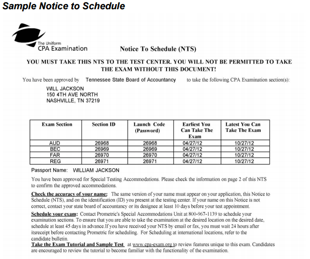

Step #1: Meet Your States CPA Exam Requirements
When determining which state to take the CPA exam you need to very carefully review their CPA exam requirements to ensure you are eligible to sit for the CPA exam.
Each state has slightly different requirements so be sure to contact your state board for the most up to date information but below let's discuss the primary requirements each state does have.
Am I Eligible To Sit For The CPA Exam?
There are four primary categories of requirements that you must satisfy in order to be eligible to sit for the CPA exam. They include education, residency, age and citizenship requirements.
Let’s deep dive into each requirement so that you have an understanding of what to expect before finding the exact state you want to apply to sit for the CPA exam.
NOTE: These are just a summary of the different types of requirements, scroll to the end of this step to find your specific state's requirements.
What Are The Education Requirements To Sit For The CPA Exam?
There are the three major education requirements to know before signing up for the CPA exam.
Education Requirement To Sit:
The biggest requirement to consider is whether your state requires 150 credit hours or 120 credit hours to actually sit for the exam.
This does not mean that you do not need to complete 150 hours because you are required to complete all 150 hours in order to become licensed.
Types of Classes Matter:
Be sure to check that you have completed the appropriate # of accounting course credits, business law credits, and other required classes. Again these will vary by state.
What Are CPA Exam Residency Requirements?
Did you know that you can sit for the CPA exam in a state where you don’t currently live?
Understanding CPA Exam residency requirements is a crucial requirement if you are planning on working in a different state than you currently live. It is possible to sit in a different state and then transfer your CPA credits once you have established residency and want to become licensed in that state.
What Are The CPA Exam Age Requirements?
Some states require you to be a certain age - but don’t worry the majority of states don’t have an age requirement and if they do the youngest allowed is 21 so unless you are trying to be like Belicia pictured below,
the 17 year old who passed the CPA exam (yes that is correct she is only 17 and passed the CPA exam!) I wouldn’t worry about the age requirement.

What Are The CPA Exam Citizenship Requirements?
If you are living outside the United States this is a very important step when signing up for the CPA exam.
Certain states allow you to sit for the CPA exam as a Non-US citizen but some states do not. So be aware that you need to identify which states have these requirements.
Refer below for a table with all of the states without CPA exam Citizenship
requirements.
For additional details about what you need to know to apply for the CPA exam as an international candidate, please watch this video:
Find Your State Here!
If you would like a more detailed checklist to make this process even easier, please download your Free CPA Exam Application Checklist PDF below:
Step #2: Apply For The CPA Exam
Applying for the CPA exam is a complex process that requires a significant amount of time and planning on your part. Let's discuss the right and wrong way to apply for the CPA exam that is going to save you the most time and the most money.
Here's the step by step process I recommend you follow:
1) Order and send your official college transcripts to your state board of accountancy
You need to do this as soon as you have found the state you are eligible to sit for the CPA exam and you will want to include every college level school you have attended.
In important to know if you have completed all of the required education requirements before sending your transcripts as it will significantly slow down your application process if you need additional college credits to be eligible to take the CPA exam.
2) Complete your CPA exam application and include the required application fee
This is a standard application that asks for you to prove your residency, age and citizenship etc... and you should expect the fee to be between $100-$200 depending on your state.
3) Obtain your Authorization to Test (ATT) from your State Board Of Accountancy
Once your application is processed, most states give you 90 days to decide which section you want to take first. Be aware that if you don't decide within 90 days and pay for the section(s) all your fees will be forfeited and you will have to start over.
Here's the link to use when signing up for sections of the CPA exam on NASBA's website - but please don't sign up until you have read the next step!
FYI - Expect to pay between $600-$1,000 in CPA Exam fees for all four sections. More on this in a moment in step 4.
4) Obtain Your Notice To Schedule (NTS) from your state board of accountancy
Once you have remitted your payment for the section(s) you wish to sit for first, you will receive a Notice To Schedule from NASBA.
Sample Notice To Schedule For Reference:

This is your official "ticket" to sit for the CPA exam in the United States
Typically it takes between 2-6 weeks to receive your NTS by paper but some states have moved to an online system that can be processed within 24 hours.
Depending on your state you will have 6 months from the date your NTS is issued to sign up for the sections of the CPA exam you paid for.
NOTE: There are exceptions to this rule from the following states:
-
Texas 90 days from application date
-
California 9 months from NTS issue date
-
Hawaii 9 months from NTS issue date
-
Louisiana 9 months from NTS issue date
-
Utah 9 months from NTS issue date
-
North Dakota 12 months from NTS issue date
-
South Dakota 12 months from NTS issue date
-
Virginia 12 months from NTS issue date
Now question of the day...
Since it's cheaper to sign up for all four sections of the CPA exam at once that's the right thing to do right?
NO!
Here's why....
Biggest CPA Exam Scheduling Mistake You Can Make
When I first signed up for the CPA exam I made the biggest mistake of my entire CPA exam experience.
I signed up for all 4 sections in a row.
I was over-confident, I saw all my friends passing on their first try and I had better grades than some of them even!
I was so sure that I would pass the 1st time through that I didn’t even consider what would happen if I ended up failing a section.
So lets dig into the details for why this was the biggest mistake I could have made when signing up for the CPA exam.
Once your transcripts and application have been approved, your state board will send you a notice to schedule (NTS).
Depending on which state you are in you will likely be given six to nine months to sit for all the parts you signed up for.
If you sign up for all 4 parts, you will be given a deadline of 6 months to schedule and sit for each section in that time period or you will lose your CPA exam fees.
Totally fair right!
So are you starting to see how this could cause issues if you fail a section?
Game Changing CPA Exam Scheduling Tip
What is the right way to schedule the sections of the CPA exam?
Simple answer is...
Sign up for 1 section at a time.
That way you take your 1st section, start studying for your 2nd section and then after about a month or less, you will find out the scores for your 1st exam. Pass or fail you go all out for your second section and take it and depending on whether you passed or failed your first exam you either resign up or sign up for section 3 ASAP.
Does that make sense?
What happened to me was that I signed up for all 4 sections and after I failed the 1st I was locked in to take the 2nd, then when I failed the 2nd I was locked into the 3rd and then when I failed the 3rd I was locked into the 4th so by the time I had failed all 4 sections I had to start all over!
Talk about a waste of time and a waste of $1,000.
And did I mention that my scores ranged from 67 to 72, complete heart break.
Don’t make the same mistakes I did and just sign up for 2 at a time!
And if you don't believe me that this is what you should do, check out what Roger Phillip, CPA of UWorld Roger CPA Review recommends all their students do.
Step #3: Pick Order To Sit For The CPA Exam

What Is The Best Order To Sit For The CPA Exam?
In my opinion, I recommend starting with Financial Accounting and Reporting (FAR). It's the largest section in terms of material tested and it's a great one to get out of the way first.
That being said... the simple answer is that it doesn't really matter what section you sit for first, the only wrong answer is to procrastinate taking ANY section of the CPA exam.
At the end of the day, no matter what order you take the exam it’s going to be painful and will stress you out to the max!
All your friends may have their theories as to which order to take the CPA exam, but it is really up to you to figure it out.
What CPA Exam Order Works Best For YOU?
In college I always heard about three different theories on the order you should take the CPA exam. I have listed them below and given reasons why the theories are flawed.
1) Start with what you think is hardest or easiest first.
The problem is that until you start studying you won’t know what section is actually hardest/easiest for you.
2) Start with FAR and end with BEC.
This is probably one of the more popular orders to go with. Again you just never know if BEC is going to be the hardest part for you to pass, but if you can handle the massive amount of material from FAR then hypothetically you shouldn’t have any trouble with BEC.
3) Start with BEC first just to get one section under your belt.
The problem with this is that once you pass your first section the 18 month countdown begins before you lose your first section. So while BEC has the highest pass rate it might make sense to get the others done first so you don't risk losing BEC if you struggle with the others.
But again I struggled with BEC so you just don't know.
My Advice
As someone who struggled to pass the CPA exam, I had no idea at first what order to take the CPA exam.
I started with BEC because I thought it was the “easiest” because it was so short.
Unfortunately due to the random mishmash of information it turned into one of the most difficult sections for me. So do not gauge your order based on whether a test is shorter.
I would recommend starting with a topic that you are most familiar.
If your major is tax then take REG first and so forth.
If you are fresh out of college, a section will truly be “easier” for you if you are able to take what you learned in college and translate it to the CPA exam material.
Another piece of advice is to treat all exam sections as equals and don’t change up how much you study just because you THINK a certain section will be easier.
It never hurts to over-study but ALWAYS hurts to understudy.
Step #4: Find A CPA Review Course
Without a doubt the most important step in passing the CPA exam is picking a CPA review course that maximizes how you learn best.
If your course isn't designed based on how you actually learn it will lead to busy work and inefficiency.
To avoid this please follow my 7 Steps To Picking The Best CPA Review Course For You:
Step 1: How Do You Learn Best?
Think back to college and write down at least three of your study strengths and three weaknesses.
PRO TIP: Focus on identifying study activities that were efficient and helped you actually understand materials.
Example: I preferred to read the text and solve the problems on my own (class was NOT a learning experience for me) and I discovered that making in-depth outlines of my textbook was actually busy work and not productive studying.
Step 2: Are You A Visual Learner or Self-Studier?
Based on how you determined you studied best would you say that you prefer to study on your own and teach yourself the material OR do did you do your best learning in the classroom?
Step 3a: If You Are A Self-Studier...
If you determined you are more of a self-studier then you need to focus on finding a CPA review course that focuses on providing a solid textbook, pre-made flashcards, and tons of multiple choice and minimal video lectures.
I personally recommend the following CPA Review Courses if this describes you:
Gleim CPA Review
Wiley CPAexcel Review
Surgent CPA Review
Step 3b: If You Are A Visual Learner
If you determined that you did your best learning in the classroom then you need to focus on finding a CPA review course that provides you with the BEST video lectures or possibly find a live/virtual class to attend, a program that links the multiple choice very well with the lectures, and a course that has an in-depth study planner to keep you structured.
If you fit this description best, then here are the CPA courses I recommend most:
UWorld Roger CPA Review
Yaeger CPA Review
Wiley CPAexcel
Step 4: Complete Your CPA Review Course Research
Head to my Top 10 Best CPA Review Courses Comparison Page and filter by Self-Studier or by Video Lectures and read my assessments of each course.
Link: https://www.cpaexamguide.com/best-cpa-review-courses
Step 5: Try The CPA Review Courses You Have Identified
After identifying 2-3 CPA review courses that match how you learn best, give each course a trial run either by finding the free trials in my review or by using the free trial links of my 4 most recommended courses below:
Wiley CPAexcel Trial
Roger CPA Trial
Gleim CPA Trial
Surgent CPA Trial
Yaeger CPA Trial
You can also compare some of the most popular courses individually at the links below:
Wiley CPAexcel vs Becker CPA Review
Becker vs UWorld Roger CPA Review
Wiley CPAexcel vs UWorld Roger CPA Review
Gleim CPA vs Becker CPA Review
You can also learn step by step what you need to do to pass the CPA exam by specific CPA review course. All CPA courses are not created equally and you need to understand how to use them the right way.
How To Pass The CPA Exam With Wiley CPAexcel
Step 6: Find The Largest Discount Available For Your CPA Review Course
Once you find the CPA review course for you then head to my CPA Exam Guide Review Course Discounts Page and ensure you are getting the best deal possible!
Remember, investing in a CPA Review Course is an investment in your future. Within two years of passing the CPA exam I was able to negotiate a $25K/yr increase in annual salary.
This $2-3K investment in the RIGHT CPA Review Course for you will pay dividends for the rest of your career if you play your promotion cards right.
Be smart though, don't pay full price for any CPA Review Course! Use the link below.
Link: https://www.cpaexamguide.com/best-cpa-review-discounts
Step 7: Sign Up For My Free CPA Exam Mentoring Course To Learn How To Maximize Your CPA Review Course
Join my free Ultimate CPA Exam Guide and I will give you a PDF copy of my 7 Step Process to picking the Best CPA Review Course for you AND my free CPA Exam Mentoring Video Series. See you on the inside.
Link: Join Ultimate CPA Exam Guide
Step #5: Schedule Your First CPA Exam Section
The final step in completing your CPA exam application is to schedule your first CPA exam section.
Once your CPA exam application has been approved and you have received your NTS, it's time to schedule your exam at a Prometric Center.
Step 1) Go to the Prometric Website and click the "schedule my test" button
Step 2) From your NTS you will need to enter your exam section ID and the first four letters of your last name
Step 3) Then you will select the date, location of Prometric Center nearest you and the section(s) of the CPA exam you want to schedule.
What To Expect at the Prometric Center
Have you ever been to Fort Knox?
If not, you will have a somewhat similar experience visiting your local Prometric Testing center.
They take cheating that seriously (No Joke!).
Prometric is a national standardized test taking center that works with NASBA to proctor your exams.
Here is a quick list of everything you need to know before entering a Prometric Center:
1)
No calculators
2) No pen, paper or any other material
3) No electronic device whatsoever
4)
No watches (no covert spying device)
5) Expect
TSA style ID check and scan (includes security wand check)
Additional Information Specific to CPA Candidates (SOURCE)
1) Bring two forms of ID that match your NTS (ID = Drivers License, valid credit card passport, etc...)
2) Arrive at least 30 minutes early to ensure you have time to sign in and go through the security process.
3) A locker will be provided for you to place all personal belongings.
What To Do Once You Start Your Exam (SOURCE)
1)
Your exam will have a countdown timer for you to track your total time remaining
2) After each test-let you will be given the option to take a short break, but remember that the clock keeps ticking! Choose your time wisely.
What If You Need To Reschedule A Section Of The CPA Exam?
Life happens. Maybe you don't feel prepared enough or something happens at work that puts you behind on your studies and you just can't sit for the CPA exam.
What now?
Thankfully it's fairly simple to reschedule your CPA exam sections if necessary.
Here's a breakdown of the fees you can expect to have to pay:
1) 30 days or more before your exam, no fee
2) 5-30 days before your exam: $35
3) 1-5 days before your exam: you will be charged the full price of the section
4) Less than 24 hours before your exam: rescheduling is not allowed, you must reapply and repay your CPA exam fees.
What's The Next Step In Becoming A CPA?
Signing up and applying for the CPA exam is only the first step to becoming a CPA.
If you want to learn how to study for the CPA exam, how to prepare for what happens if you fail a section of the CPA exam and learn what you need to do to save time and truly understand the CPA exam material being tested, I highly recommend that you take our free CPA exam study personality quiz.
Not only will it help you determine how you learn best, but it will help you apply your study personality to your CPA review course so that you can tailor it to fit your specific needs.
Take the study personality quiz here